Changes in PRIMAP-hist v2.6_final compared to v2.5.1_final for Spain
2024-09-24
Johannes Gütschow
Change analysis for Spain for PRIMAP-hist v2.6_final compared to v2.5.1_final
Overview over emissions by sector and gas
The following figures show the aggregate national total emissions excluding LULUCF AR6GWP100 for the country reported priority scenario. The dotted linesshow the v2.5.1_final data.
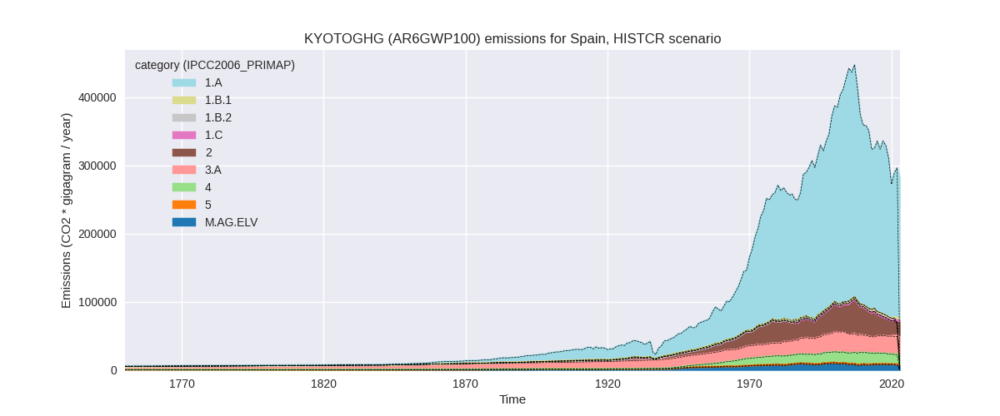
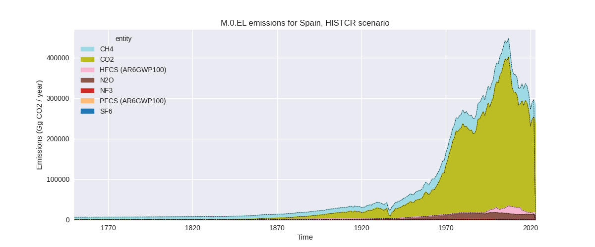
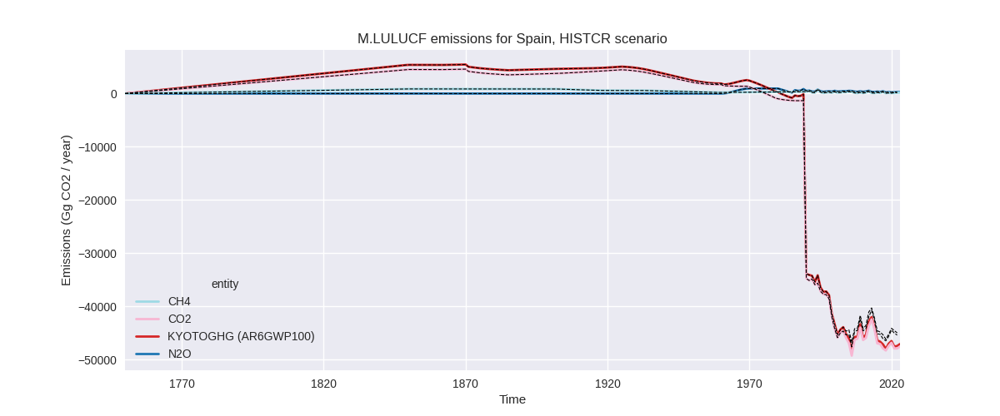
The following figures show the aggregate national total emissions excluding LULUCF AR6GWP100 for the third party priority scenario. The dotted linesshow the v2.5.1_final data.
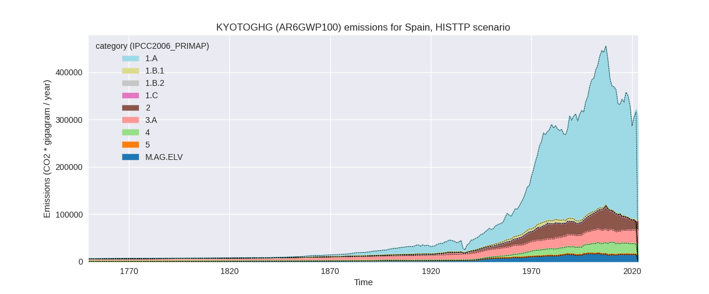
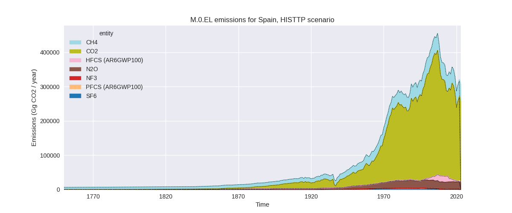
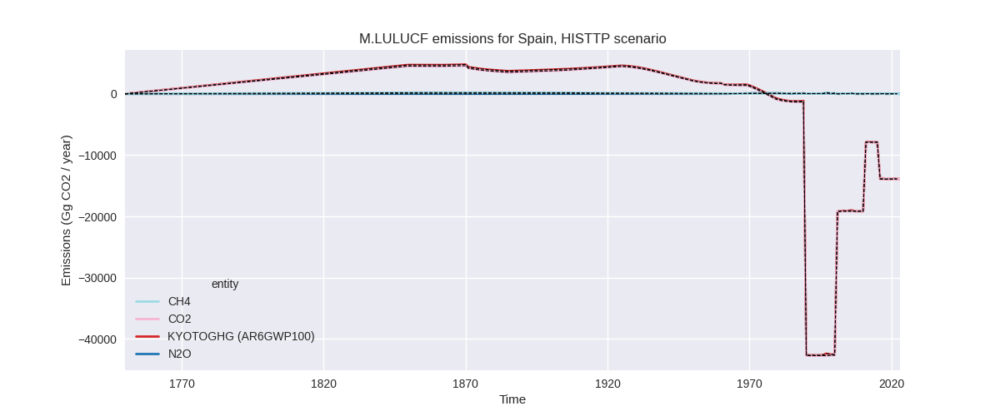
Overview over changes
In the country reported priority scenario we have the following changes for aggregate Kyoto GHG and national total emissions excluding LULUCF (M.0.EL):
- Emissions in 2022 have changed by -0.6%% (-1695.43 Gg CO2 / year)
- Emissions in 1990-2022 have changed by -0.2%% (-550.36 Gg CO2 / year)
In the third party priority scenario we have the following changes for aggregate Kyoto GHG and national total emissions excluding LULUCF (M.0.EL):
- Emissions in 2022 have changed by 1.5%% (4627.08 Gg CO2 / year)
- Emissions in 1990-2022 have changed by 0.1%% (230.18 Gg CO2 / year)
Most important changes per scenario and time frame
In the country reported priority scenario the following sector-gas combinations have the highest absolute impact on national total KyotoGHG (AR6GWP100) emissions in 2022 (top 5):
- 1: 1.A, CO2 with -9040.41 Gg CO2 / year (-4.0%)
- 2: 2, HFCS (AR6GWP100) with 4423.57 Gg CO2 / year (841.3%)
- 3: 1.B.2, CO2 with 3148.42 Gg CO2 / year (541.7%)
- 4: 2, CO2 with -807.95 Gg CO2 / year (-4.8%)
- 5: 4, CH4 with 571.88 Gg CO2 / year (4.5%)
In the country reported priority scenario the following sector-gas combinations have the highest absolute impact on national total KyotoGHG (AR6GWP100) emissions in 1990-2022 (top 5):
- 1: 1.A, CO2 with -450.73 Gg CO2 / year (-0.2%)
- 2: 3.A, CH4 with -103.70 Gg CO2 / year (-0.4%)
- 3: 1.B.2, CO2 with 94.96 Gg CO2 / year (3.8%)
- 4: M.AG.ELV, N2O with -80.46 Gg CO2 / year (-1.2%)
- 5: 2, HFCS (AR6GWP100) with -54.69 Gg CO2 / year (-0.5%)
In the third party priority scenario the following sector-gas combinations have the highest absolute impact on national total KyotoGHG (AR6GWP100) emissions in 2022 (top 5):
- 1: 2, HFCS (AR6GWP100) with 3934.64 Gg CO2 / year (inf%)
- 2: 1.A, CO2 with 1399.16 Gg CO2 / year (0.6%)
- 3: 2, PFCS (AR6GWP100) with -679.14 Gg CO2 / year (-74.5%)
- 4: 4, CH4 with 521.61 Gg CO2 / year (3.1%)
- 5: 2, CO2 with -357.00 Gg CO2 / year (-2.5%)
In the third party priority scenario the following sector-gas combinations have the highest absolute impact on national total KyotoGHG (AR6GWP100) emissions in 1990-2022 (top 5):
- 1: 2, HFCS (AR6GWP100) with 119.23 Gg CO2 / year (1.4%)
- 2: 4, CH4 with 81.60 Gg CO2 / year (0.5%)
- 3: 1.A, CO2 with 61.96 Gg CO2 / year (0.0%)
- 4: 4, CO2 with -36.01 Gg CO2 / year (-1.2%)
- 5: 5, N2O with 25.49 Gg CO2 / year (2.0%)
Notes on data changes
Here we list notes explaining important emissions changes for the country. ’' means that the following text only applies to the TP time series, while means that it only applies to the CR scenario. Otherwise the note applies to both scenarios.
- We have added EEA 2024 data for Spain.
- The high increase in HFCs 2022 emissions (CR and TP) comes from increasing emissions in EEA 2024 which replace the extrapolated 2022 data that followed the steep decline of the years before 2020.
- Sector 1.B.2 (oil and gas) has very high relative change. PRIMAP-hist v2.5.1 showed a steep decline for 2022 while we have increasing emissions in EEA data. The very low 2022 data point in v2.5.1 likely comes from a scaling problem due to the almost zero EDGAR 8.0 data.
- The other noteworthy changes in 2022 are due to EEA data replacing third party data (growth rates) used in v2.5.1.
Changes by sector and gas
For each scenario and time frame the changes are displayed for all individual sectors and all individual gases. In the sector plot we use aggregate Kyoto GHGs in AR6GWP100. In the gas plot we usenational total emissions without LULUCF. ## country reported scenario
2022
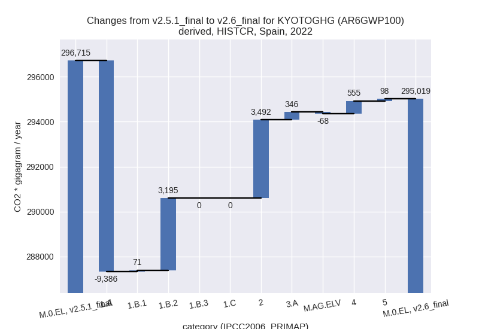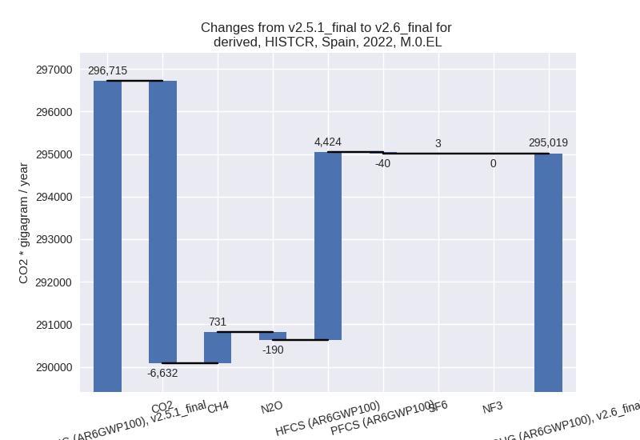
1990-2022
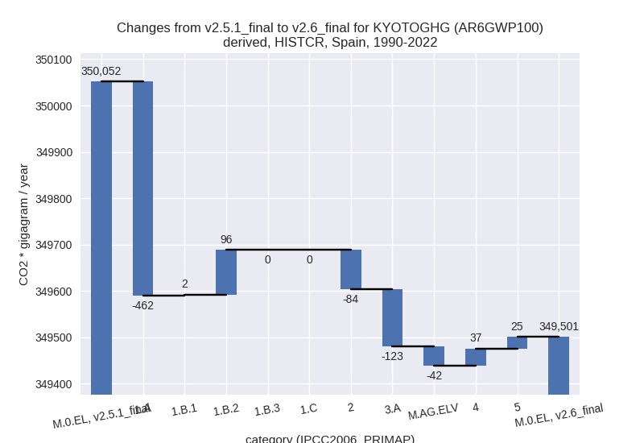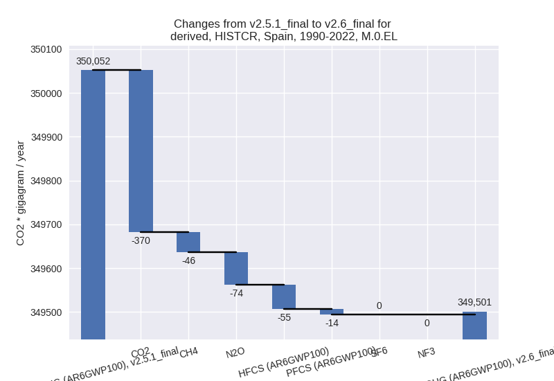
third party scenario
2022
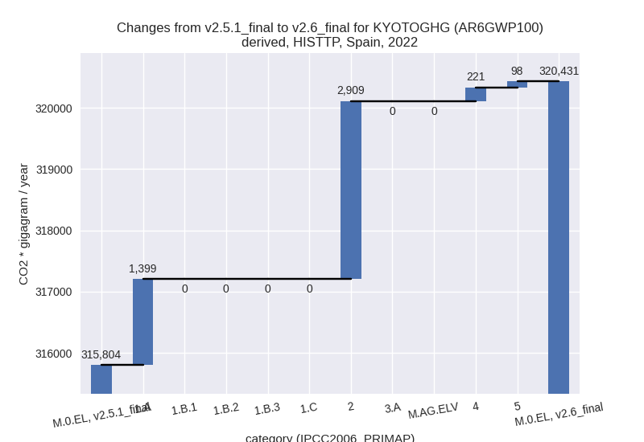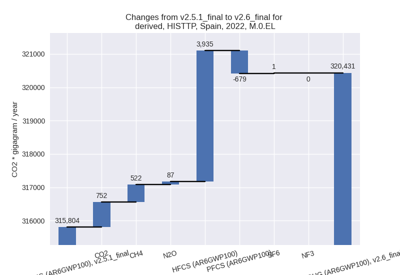
1990-2022
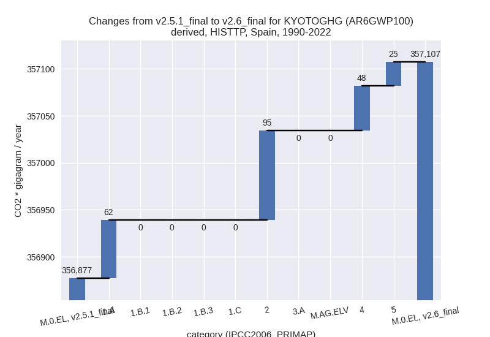
Detailed changes for the scenarios:
country reported scenario (HISTCR):
Most important changes per time frame
For 2022 the following sector-gas combinations have the highest absolute impact on national total KyotoGHG (AR6GWP100) emissions in 2022 (top 5):
- 1: 1.A, CO2 with -9040.41 Gg CO2 / year (-4.0%)
- 2: 2, HFCS (AR6GWP100) with 4423.57 Gg CO2 / year (841.3%)
- 3: 1.B.2, CO2 with 3148.42 Gg CO2 / year (541.7%)
- 4: 2, CO2 with -807.95 Gg CO2 / year (-4.8%)
- 5: 4, CH4 with 571.88 Gg CO2 / year (4.5%)
For 1990-2022 the following sector-gas combinations have the highest absolute impact on national total KyotoGHG (AR6GWP100) emissions in 1990-2022 (top 5):
- 1: 1.A, CO2 with -450.73 Gg CO2 / year (-0.2%)
- 2: 3.A, CH4 with -103.70 Gg CO2 / year (-0.4%)
- 3: 1.B.2, CO2 with 94.96 Gg CO2 / year (3.8%)
- 4: M.AG.ELV, N2O with -80.46 Gg CO2 / year (-1.2%)
- 5: 2, HFCS (AR6GWP100) with -54.69 Gg CO2 / year (-0.5%)
Changes in the main sectors for aggregate KyotoGHG (AR6GWP100) are
- 1: Total sectoral emissions in 2022 are 222102.01
Gg CO2 / year which is 75.3% of M.0.EL emissions. 2022 Emissions have
changed by -2.7% (-6119.75 Gg CO2 /
year). 1990-2022 Emissions have changed by -0.1% (-363.23 Gg CO2 / year). For 2022
the changes per gas
are:
The changes come from the following subsectors:- 1.A: Total sectoral emissions in 2022 are 218009.70
Gg CO2 / year which is 98.2% of category 1 emissions. 2022 Emissions
have changed by -4.1% (-9385.87 Gg
CO2 / year). 1990-2022 Emissions have changed by -0.2% (-461.52 Gg CO2 / year). For 2022
the changes per gas
are:
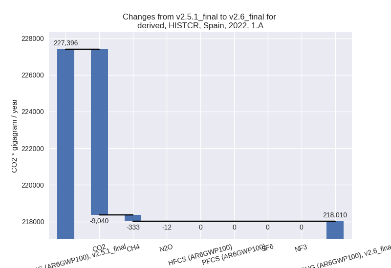
There is no subsector information available in PRIMAP-hist. - 1.B.1: Total sectoral emissions in 2022 are 119.23
Gg CO2 / year which is 0.1% of category 1 emissions. 2022 Emissions have
changed by 148.6% (71.27 Gg CO2 /
year). 1990-2022 Emissions have changed by 0.3% (2.16 Gg CO2 / year). For 2022 the
changes per gas
are:
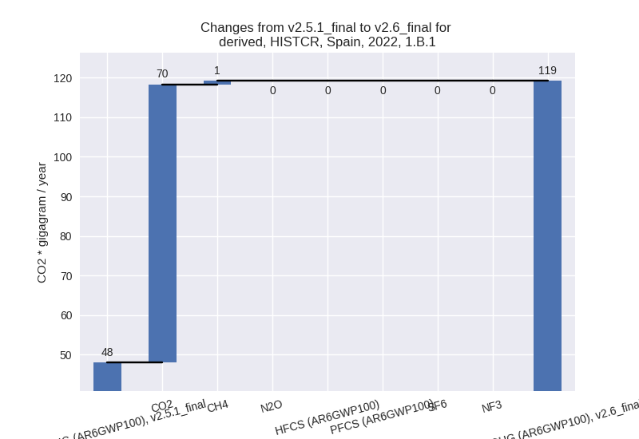
There is no subsector information available in PRIMAP-hist. - 1.B.2: Total sectoral emissions in 2022 are 3973.09
Gg CO2 / year which is 1.8% of category 1 emissions. 2022 Emissions have
changed by 410.5% (3194.85 Gg CO2 /
year). 1990-2022 Emissions have changed by 3.5% (96.13 Gg CO2 / year). For 2022 the
changes per gas
are:
For 1990-2022 the changes per gas are:
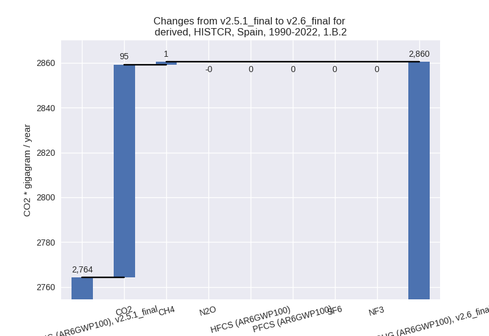
There is no subsector information available in PRIMAP-hist.
- 1.A: Total sectoral emissions in 2022 are 218009.70
Gg CO2 / year which is 98.2% of category 1 emissions. 2022 Emissions
have changed by -4.1% (-9385.87 Gg
CO2 / year). 1990-2022 Emissions have changed by -0.2% (-461.52 Gg CO2 / year). For 2022
the changes per gas
are:
- 2: Total sectoral emissions in 2022 are 22331.73 Gg
CO2 / year which is 7.6% of M.0.EL emissions. 2022 Emissions have
changed by 18.5% (3492.43 Gg CO2 /
year). 1990-2022 Emissions have changed by -0.2% (-84.30 Gg CO2 / year). For 2022 the
changes per gas
are:
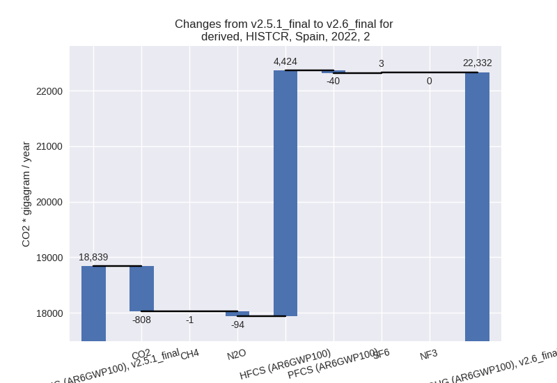 - M.AG: Total sectoral emissions in 2022 are 35000.65 Gg CO2 / year which is 11.9% of M.0.EL emissions. 2022 Emissions have changed by 0.8% (278.11 Gg CO2 / year). 1990-2022 Emissions have changed by -0.5% (-165.46 Gg CO2 / year).
- 4: Total sectoral emissions in 2022 are 14725.60 Gg
CO2 / year which is 5.0% of M.0.EL emissions. 2022 Emissions have
changed by 3.9% (555.36 Gg CO2 /
year). 1990-2022 Emissions have changed by 0.2% (37.14 Gg CO2 / year). For 2022 the
changes per gas
are:
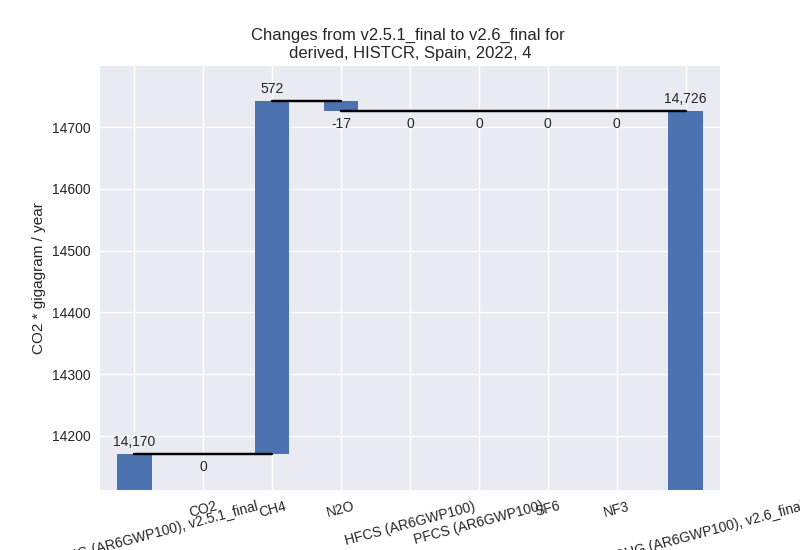 - 5: Total sectoral emissions in 2022 are 859.12 Gg
CO2 / year which is 0.3% of M.0.EL emissions. 2022 Emissions have
changed by 12.9% (98.41 Gg CO2 /
year). 1990-2022 Emissions have changed by 2.0% (25.49 Gg CO2 / year). For 2022 the
changes per gas
are:
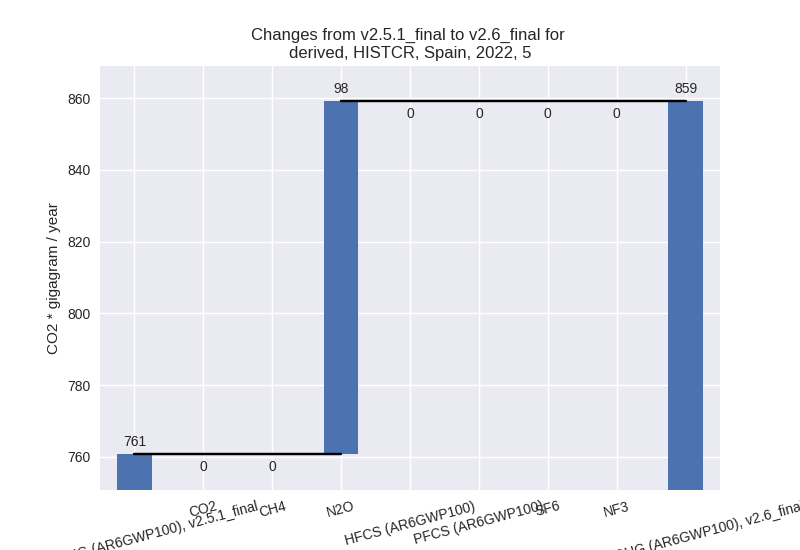
third party scenario (HISTTP):
Most important changes per time frame
For 2022 the following sector-gas combinations have the highest absolute impact on national total KyotoGHG (AR6GWP100) emissions in 2022 (top 5):
- 1: 2, HFCS (AR6GWP100) with 3934.64 Gg CO2 / year (inf%)
- 2: 1.A, CO2 with 1399.16 Gg CO2 / year (0.6%)
- 3: 2, PFCS (AR6GWP100) with -679.14 Gg CO2 / year (-74.5%)
- 4: 4, CH4 with 521.61 Gg CO2 / year (3.1%)
- 5: 2, CO2 with -357.00 Gg CO2 / year (-2.5%)
For 1990-2022 the following sector-gas combinations have the highest absolute impact on national total KyotoGHG (AR6GWP100) emissions in 1990-2022 (top 5):
- 1: 2, HFCS (AR6GWP100) with 119.23 Gg CO2 / year (1.4%)
- 2: 4, CH4 with 81.60 Gg CO2 / year (0.5%)
- 3: 1.A, CO2 with 61.96 Gg CO2 / year (0.0%)
- 4: 4, CO2 with -36.01 Gg CO2 / year (-1.2%)
- 5: 5, N2O with 25.49 Gg CO2 / year (2.0%)
Changes in the main sectors for aggregate KyotoGHG (AR6GWP100) are
- 1: Total sectoral emissions in 2022 are 233634.05 Gg CO2 / year which is 72.9% of M.0.EL emissions. 2022 Emissions have changed by 0.6% (1399.16 Gg CO2 / year). 1990-2022 Emissions have changed by 0.0% (61.96 Gg CO2 / year).
- 2: Total sectoral emissions in 2022 are 20170.08 Gg
CO2 / year which is 6.3% of M.0.EL emissions. 2022 Emissions have
changed by 16.9% (2908.73 Gg CO2 /
year). 1990-2022 Emissions have changed by 0.3% (95.10 Gg CO2 / year). For 2022 the
changes per gas
are:
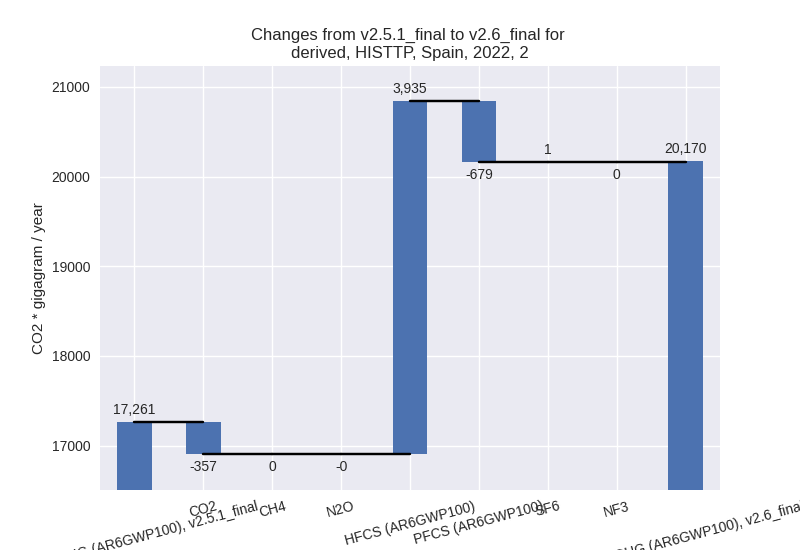 - M.AG: Total sectoral emissions in 2022 are 43571.05 Gg CO2 / year which is 13.6% of M.0.EL emissions. 2022 Emissions have changed by 0.0% (0.00 Gg CO2 / year). 1990-2022 Emissions have changed by 0.0% (0.00 Gg CO2 / year).
- 4: Total sectoral emissions in 2022 are 22196.74 Gg CO2 / year which is 6.9% of M.0.EL emissions. 2022 Emissions have changed by 1.0% (220.77 Gg CO2 / year). 1990-2022 Emissions have changed by 0.2% (47.63 Gg CO2 / year).
- 5: Total sectoral emissions in 2022 are 859.12 Gg
CO2 / year which is 0.3% of M.0.EL emissions. 2022 Emissions have
changed by 12.9% (98.41 Gg CO2 /
year). 1990-2022 Emissions have changed by 2.0% (25.49 Gg CO2 / year). For 2022 the
changes per gas
are: